Roxo Profundo
--roxo-profundo: #290241
Base, autoridade e fundos escuros.

Inteligência para decisão.
Sistema visual
Sistema semântico em CSS Variables, com cores, tipografia e espaçamentos aplicados em temas claro e escuro.
--roxo-profundo: #290241
Base, autoridade e fundos escuros.
--violeta-claro: #9381FF
Destaques, links e elementos interativos.
--preto-organico: #0F1108
Texto principal em fundo claro.
--branco-quente: #FFFFFC
Fundo principal e respiro editorial.
--rosa-coral: #EF476F
Uso pontual e ênfase controlada.
Sobre a paleta
Nossa paleta foi construída para refletir a combinação entre profundidade técnica, clareza e inovação. O Roxo Profundo é a cor principal da marca: transmite conhecimento, sofisticação e diferencia a NeuralMind.ai em um mercado onde o azul domina grande parte das empresas de tecnologia. O Violeta Claro amplia a identidade visual com contraste e modernidade, enquanto o Preto Orgânico e o Branco Quente formam uma base atemporal, garantindo legibilidade e elegância. O Rosa Coral aparece de forma pontual em destaques e interações, adicionando energia e um toque de ousadia sem comprometer a sobriedade da marca.
Tipografia principal
Outfit é a família principal da NeuralMind.ai e a base do lettering. Use 400 para textos corridos, 500 para subtítulos, 500 para títulos amplos, 600–700 para títulos de seção e 800 para destaques pontuais. Preserve o contraste entre pesos e use entrelinha de 1,5 nos textos e de 1,05 a 1,15 nos títulos.
Família principal
Textos 400 · subtítulos 500 · títulos 500–700 · destaques 800. Use a mesma família em todos os canais para manter a identidade reconhecível.
ÁÉÍÓÚ · ação · inteligência · 0123456789
Família de apoio
Rótulos e legendas 500–600 · números e indicadores 600–700. A estrutura geométrica acompanha Outfit e retoma o desenho do M da assinatura.
Contexto · precisão · 0123456789
Tipografia da marca · segunda proposta
Outfit é a família do lettering: Neural 400, Mind 800. Apenas o M usa Urbanist 800, em escala de 98%. O sufixo .ai segue o modo A2: Outfit 400, tamanho integral e mesma linha de base. Outfit também compõe os textos, títulos, posts, documentos e apresentações. Urbanist é a fonte de apoio para rótulos, legendas e indicadores; a troca de M é exclusiva do logo, fornecido em contornos.
Outfit 400 Outfit 800 M
Identidade visual
Assinatura oficial: proposta 02, Outfit + M aberto da Urbanist. Neural em 400 e Mind em 800; M em escala de 98%, tracking −0,02 em e ajuste após o M de −0,015 em. Tratamento A2: .ai minúsculo, peso 400, no mesmo tamanho e na mesma linha do nome, com margem de 0,015 em. O monograma NM mantém esse contraste. SVGs em contornos, sem depender de fontes instaladas.

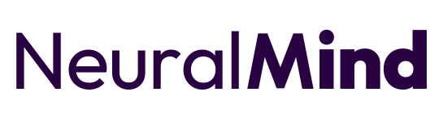
Baixar SVGBaixar SVGBaixar SVG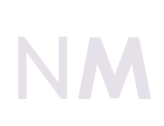
Baixar SVG
Baixar SVG
Área de proteção mínima
A margem visual representa a zona mínima de respiro. X é a altura da letra N do logo e deve ser mantido livre de texto, imagens e bordas.
Não esticar ou comprimir.
Não recolorir em rosa coral.
Não rotacionar o lockup.
Não reduzir a opacidade da assinatura. Use apenas o NM de marca d’água fornecido.
Identidade Verbal
Princípios para contar, com clareza e humanidade, como a NeuralMind transforma complexidade em inteligência para decisão.
Missão
Transformar complexidade em inteligência para decisões mais claras, seguras e consistentes.
Posicionamento
A NeuralMind cria inteligência para apoiar decisões em contextos de alta complexidade.
Decision Intelligence é o território que organiza a marca e o portfólio. Em português, preferimos “inteligência para decisões críticas” quando o público ainda não conhece o conceito.
Melhorar a qualidade, a velocidade e a consistência das decisões ao transformar informação complexa em conhecimento útil e verificável.
A inteligência artificial viabiliza a entrega, mas não lidera a narrativa. Falamos primeiro da decisão, de quem decide e do impacto que está em jogo.
“Inteligência para decisão.” Use como síntese institucional, com ponto final sempre que aparecer como frase independente.
Valores
Essência: A melhor tecnologia não ocupa o lugar de quem decide. Ela amplia sua visão.
Explicação: Nossas soluções organizam evidências, revelam relações e apontam caminhos. O especialista interpreta o contexto, faz escolhas e assume a decisão.
Frase síntese: A tecnologia apoia. As pessoas decidem.
Essência: Decisões críticas não podem depender de respostas genéricas.
Explicação: Combinamos conhecimento de domínio, engenharia e ciência para compreender a linguagem, as regras e as nuances de ambientes jurídicos, clínicos, regulatórios e de controle.
Frase síntese: Complexidade pede inteligência especializada.
Essência: Toda recomendação relevante precisa mostrar de onde veio.
Explicação: Rastreabilidade, transparência e supervisão humana fazem parte da solução desde o início. Assim, cada resposta pode ser conferida antes de orientar uma decisão.
Frase síntese: Não basta responder. É preciso mostrar por quê.
Essência: Pesquisa ganha sentido quando melhora uma decisão no mundo real.
Explicação: Nosso rigor científico se encontra com problemas concretos. Testamos, medimos e aprendemos com especialistas para construir sistemas confiáveis e úteis no dia a dia.
Frase síntese: Rigor científico, impacto concreto.
Tom de Voz
A NeuralMind fala sobre decisões, não sobre deslumbramento tecnológico. Somos especialistas conversando com especialistas, com clareza suficiente para aproximar e profundidade suficiente para gerar confiança.
A inteligência artificial aparece como meio quando ajuda a explicar a solução. O centro da história é sempre humano: a pessoa que precisa compreender um cenário difícil, pesar evidências e decidir bem.
Dominamos a complexidade sem transferi-la para quem lê.
Explicamos conceitos avançados em linguagem direta, preservando a precisão e cortando o jargão que não ajuda.
Sensações transmitidas: confiança, credibilidade, domínio.
Mostramos o que muda quando uma decisão passa a contar com informação organizada, contexto e evidências.
Nossa confiança nasce de resultados, método e experiência — nunca de superlativos.
Sensações transmitidas: segurança, domínio, consistência, avanço.
Por trás de toda decisão há uma pessoa, uma responsabilidade e consequências reais.
Escrevemos com empatia, parceria e respeito. Falamos com as pessoas, nunca de cima para baixo.
Sensações transmitidas: proximidade, parceria, cuidado.
Falamos com firmeza, sem esconder limites nem fazer promessas que a tecnologia não pode cumprir.
Deixamos claro o papel da evidência, da rastreabilidade e da validação humana em cada solução.
Sensações transmitidas: seriedade, confiança, transparência.
Características Linguísticas
Preferimos clareza a ornamentos.
Evite rodeios. Construa argumentações lógicas e sequenciais.
Quando usamos termos técnicos, usamos de forma correta e contextualizada, traduzindo quando necessário.
Alternamos frases curtas com explicações na medida certa. O texto avança sem pressa burocrática e sem atropelo publicitário.
Mostramos autoridade através de conhecimento real, não de exageros ou bravatas.
Falamos de possibilidades com os pés no chão, apoiados por pesquisa, evidências e experiência de uso.
Quando alguém lê a NeuralMind, deve sentir…
O que evitamos no tom de voz
“Clareza para compreender. Evidências para confiar. Inteligência para decidir.”
Mensagens-chave
Slogan
Inteligência para decisão.
Manifesto
Há decisões que mudam a vida de uma pessoa, o rumo de uma organização ou a forma como uma instituição cumpre seu papel. Decisões assim não cabem em atalhos.
Elas exigem contexto. Evidências. Experiência. E alguém disposto a assumir a responsabilidade pela escolha.
A NeuralMind existe para apoiar esse momento.
Desde 2017, aproximamos ciência e problemas reais para transformar volumes imensos de informação em conhecimento que pode ser compreendido, verificado e usado. Foi assim com auditores do TCU. Com analistas da ANS. Com profissionais do direito e da saúde. E é esse mesmo princípio que conecta tudo o que construímos.
Não criamos inteligência artificial para simplesmente automatizar tarefas. Criamos inteligência para ajudar pessoas a enxergar melhor antes de decidir.
Nossos modelos encontram o que importa. Nossos sistemas organizam evidências, revelam relações e sugerem caminhos. Mas a última palavra continua onde deve estar: com o especialista.
Porque uma resposta rápida, sem contexto, pode ser apenas mais ruído. Uma resposta confiável mostra suas fontes, reconhece seus limites e permite que alguém a questione.
É por isso que combinamos conhecimento de domínio, rigor científico, rastreabilidade e supervisão humana. Não como uma lista de recursos, mas como condições para decisões melhores.
Chamamos essa capacidade de Decision Intelligence.
Em português claro: inteligência para decisões críticas.
A tecnologia é o meio. A decisão é o que importa.
NeuralMind. Inteligência para decisão.
Convicções da marca
Em um mercado cheio de promessas, a NeuralMind escolhe uma posição clara. Estas respostas orientam conversas comerciais, institucionais e editoriais sem soar defensivas ou ensaiadas.
Tecnologia desconectada de uma decisão real tende mesmo a virar experimento. Começamos pelo contexto: quem decide, com quais evidências e sob quais regras. Só então desenhamos a inteligência capaz de ajudar.
Pode acontecer quando uma resposta é aceita sem questionamento. Nossas soluções fazem o oposto: mostram fontes, organizam evidências e mantêm o especialista no controle para que a tecnologia amplie — e não atropele — seu julgamento.
Ferramentas generalistas nem sempre entendem a linguagem, as regras e as exceções de um domínio. Por isso trabalhamos com conhecimento especializado e critérios de validação definidos com quem vive o problema.
Confiar não deve ser um ato de fé. Uma solução precisa indicar suas fontes, permitir verificação e deixar claros seus limites. É assim que a inteligência se torna apoio — e não risco — para uma decisão.
Segurança e privacidade fazem parte da arquitetura, não do discurso final. Atuamos em conformidade com a LGPD, não compartilhamos dados de clientes com terceiros e não os usamos para treinar nossos modelos.
Arquitetura de Produtos
NeuralMind é a marca mãe. NeuralStudio, SofIA e PrioScan organizam o portfólio em três verticais.
A marca mãe endossa a tecnologia, a pesquisa e a confiança institucional. Cada vertical apresenta uma proposta própria e organiza suas soluções por contexto de uso. Produtos e modelos não competem com as três marcas principais.
01 · Conhecimento e operações
Conhecimento que entra no fluxo de trabalho.
Organiza informação e conecta documentos, atendimento e busca ao dia a dia das equipes.
Análise e organização de matrículas, com acesso às informações necessárias para a revisão pelo especialista.
Chatbots, atendimento e busca em manuais e bases de conhecimento. NeuralSearchX é apresentado como tecnologia de busca, subordinada à vertical.
02 · Jurídico e regulatório
Contexto para decisões jurídicas e regulatórias.
Do regulatório ao jurídico, do pré-contencioso ao contencioso. A vertical reúne aplicações especializadas para cada etapa do trabalho.
AssrtIA é a aplicação para o TCU, sob a vertical SofIA.
Família de modelos de linguagem que compõe a base tecnológica das aplicações jurídicas. Jurema é uma camada de modelos, e não uma quarta vertical.
03 · Saúde e prevenção
Informação para cuidar antes e decidir melhor.
Marca da vertical de saúde, voltada à prevenção e ao apoio à análise de exames médicos. O profissional de saúde mantém a avaliação e a decisão clínica.
Explicar a finalidade de cada aplicação e o papel do especialista. Alegações de desempenho ou eficácia clínica devem corresponder às evidências de cada solução.
Regra de apresentação: NeuralMind → vertical → solução → tecnologia. Exemplo: NeuralMind / SofIA / AssrtIA / Jurema. Nas primeiras menções, usar “uma marca NeuralMind” como endosso textual, sem criar novas versões do logo.
Biblioteca criada
SVGs inline com stroke constante, cantos arredondados e geometria limpa para apresentações e materiais digitais.
Teste de contraste
Aplicação
A identidade aplicada em peças do dia a dia — papelaria, merchandising e materiais corporativos. Mockups fotorrealistas da assinatura Outfit + M aberto, com .ai no tratamento A2, com aplicação da marca sobre cerâmica, metal, papelaria e tecido.
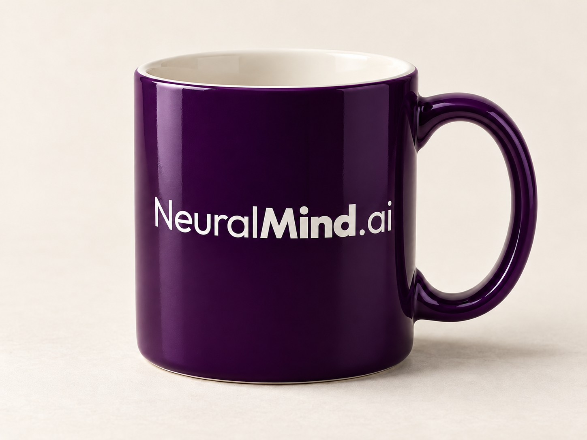
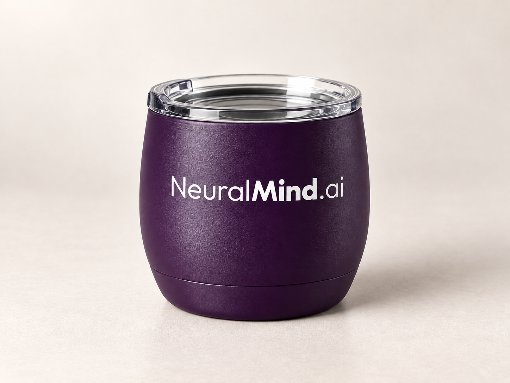
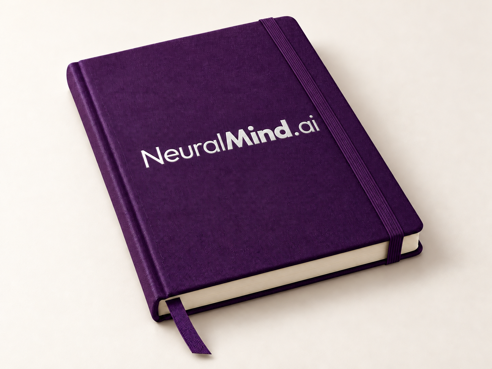
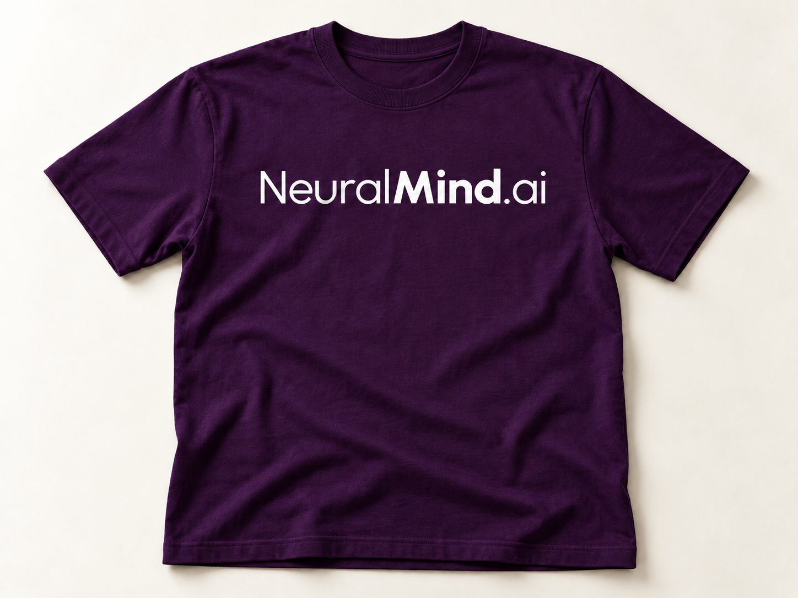
Documentos institucionais
Um sistema editorial pronto para relatórios, propostas, memorandos e materiais institucionais, com capa, hierarquia tipográfica e componentes alinhados à marca.
Estrutura profissional para transformar conteúdo técnico em documentos claros, consistentes e reconhecíveis.
Instale Outfit e Urbanist pelo kit de fontes. Substitua os textos entre colchetes e mantenha os estilos aplicados para preservar a consistência visual.


Downloads
Fundos institucionais prontos para publicação, com a marca, a assinatura e as áreas de segurança ajustadas para cada plataforma.

Composição panorâmica minimalista, com lockup à direita, contraste controlado e amplo espaço negativo.

YouTube
O logo e o slogan permanecem na área segura central para leitura em celular, desktop e TV.
Decks
Sistema modular em 16:9 para apresentações institucionais e comerciais — abertura, divisão de capítulo, verticais, produto, manifesto, conteúdo, dado de impacto, fluxo de processo, processo em colunas, arquitetura de stack e encerramento. Cada template aplica as mesmas regras de hierarquia tipográfica e zona segura.
Baixar PowerPoint editável · 16 slides · Baixar versão fiel
Brand Guide Digital
Inteligência para decisão.
contato@neuralmind.ai
neuralmind.ai
@neuralmind.ai
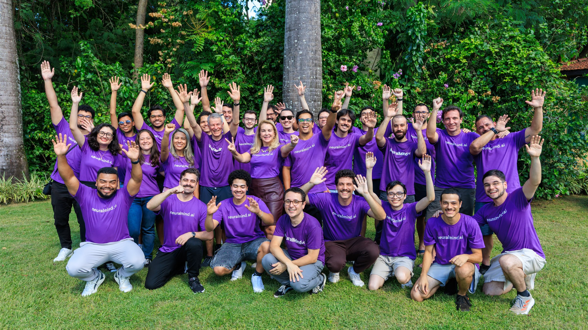
Comunicação Remota
Background institucional para Google Meet, Zoom e Teams. Composição silenciosa, com marca no canto superior esquerdo, acento coral mínimo e centro livre para o participante.
Baixar fundo · PNG 1920 × 1080
Inteligência para decisão.
Direção aprovada · galeria de referência
Dez imagens para construir a linguagem visual da NeuralMind.ai: infraestrutura de computação, pessoas desenvolvendo IA, equipes em decisão e estudo contínuo. O roxo profundo está sempre presente em um elemento físico da cena.
Direção visual aprovada. As imagens são estudos conceituais gerados por IA: não representam equipe, clientes, instalações, equipamentos próprios ou resultados reais da NeuralMind.
Pesquisadores em colaboração, com código e modelos na estação de trabalho.
Roxo presente: camiseta, xícara e painel roxos.Especialistas discutindo uma análise digital em uma sala de reunião.
Roxo presente: blusa, xícaras e painel roxos.Mãos, código e avaliação de modelos em uma estação de desenvolvimento.
Roxo presente: camiseta e xícara roxas.Aceleradores e componentes de computação em um recorte técnico próximo.
Roxo presente: superfície de trabalho roxa.Nó de computação de alto desempenho em um laboratório corporativo.
Roxo presente: painel e bancada roxos.Racks e infraestrutura de processamento em perspectiva.
Roxo presente: parede e faixa de piso roxas.Concentração e autonomia no desenvolvimento de software e IA.
Roxo presente: camiseta e xícara roxas.Leitura técnica e anotações em uma área de foco do escritório.
Roxo presente: divisória e xícara roxas.Discussão técnica entre profissionais de diferentes especialidades.
Roxo presente: camiseta, painel e xícara roxos.Engenheiros acompanhando sistemas de computação em laboratório.
Roxo presente: polo e painel roxos.Como distribuir essa linguagem
Alternar planos de infraestrutura com pesquisa, trabalho individual e colaboração. Usar GPUs e data centers para falar de engenharia e computação; pessoas para mostrar desenvolvimento e decisão; detalhes para criar ritmo. As imagens de tecnologia pura também devem ter o roxo da marca em materiais ou elementos do ambiente.
Baixar direção para fotos e vídeos · Markdown ↓Presença da marca
Pelo menos um elemento real em #290241: roupa, xícara, painel, parede, mobiliário ou superfície técnica. Um ponto de cor reconhecível, sem tingir a fotografia inteira.
Atitude e luz
Ambientes corporativos tecnológicos, luz natural ou técnica neutra, textura e gestos com propósito. Equipamentos plausíveis, telas coerentes com a atividade e pessoas concentradas.
Foto e vídeo
Planos abertos para contexto, médios para colaboração e detalhes para método. No vídeo, movimentos discretos de câmera e ações reais de trabalho. O manual reúne pautas, composição e prompts de geração.
Direção digital · proposta para implementação
Uma proposta com mais identidade editorial: fotografia com presença, cards de aplicação, dossiês de casos, percurso de trabalho e caderno de pesquisa. Alternar escalas e composições dá ritmo ao site, com a paleta e as fontes aprovadas.
Abrir proposta institucional fotográfica ↗
NeuralMind / Inteligência para decisão
Contexto para o especialista.
Inteligência para decidir.
Portfólio
NDocs para matrículas, chatbots, atendimento e busca em manuais.
Explorar NeuralStudio ↗Do pré-contencioso ao contencioso. AssrtIA, com modelos Jurema.
Explorar SofIA ↗Prevenção e apoio à análise de exames médicos, com o especialista no centro.
Explorar PrioScan ↗Um problema, diferentes pontos de entrada
Exemplo de uma seção de aplicações com destaque editorial e cards de navegação por tarefa.
Organizar documentos para que o especialista examine as informações relevantes.
Conheça NDocs ↗Do pré-contencioso ao contencioso, com aplicações especializadas e modelos Jurema.
Explore SofIA ↗Apresentar cada aplicação de saúde com sua finalidade, contexto e papel do profissional.
Explore PrioScan ↗Dossiê de aplicação
Um formato de case que combina imagem, contexto e leitura aprofundada, em vez de resumir tudo a uma métrica gigante.
Como a inteligência se torna útil
Conhecer documentos, pessoas e critérios de decisão.
Organizar fontes e trazer a informação ao fluxo de trabalho.
Dar contexto para a revisão e a decisão humana.
Pesquisa & perspectiva
Um espaço editorial para pesquisa aplicada, modelos de linguagem e conversas com quem desenvolve a tecnologia.
Conheça a direção de imagem ↗Caderno NeuralMind · proposta editorial
Formato sugerido: conversa com quem pesquisa e desenvolve.
Formato sugerido: ponto de vista de um especialista.
Formato sugerido: retrato ambiental e entrevista curta.
Pautas propostas para produção, não artigos já publicados.
Header e navegação
Logo à esquerda; Soluções, Pesquisa, Empresa e contato à direita. Header de 80 px no desktop e 64 px no celular. Menu móvel com botão nomeado e navegação por teclado. CTA principal: “Fale com a equipe”.
Cards e distribuição
Três colunas no desktop, duas no tablet e uma no celular. Mesmo espaçamento e alinhamento do link na base. Usar linhas discretas no lugar de sombras empilhadas. Uma linha de título e até três linhas de descrição sempre que possível. No mosaico de aplicações, o destaque pode alternar por campanha; ele não define prioridade entre as três verticais.
Landing page de produto
Hero com proposta específica → contexto e dor → funcionamento em três etapas → aplicações → caso com fonte → dúvidas frequentes → contato. A marca mãe endossa a vertical; soluções como NDocs e AssrtIA aparecem dentro dela.
Elementos e comportamento
Botão roxo sólido para ação principal e link sublinhado para exploração. Foco visível em violeta; erro acompanhado de texto e ícone. Formulários com rótulos persistentes, no máximo quatro campos iniciais e confirmação explícita de envio.
As fotografias são estudos conceituais na direção corporativa e tecnológica aprovada. Os links desta proposta navegam pelo próprio guia. A implementação futura deve conectar cada vertical à sua página e o formulário ao atendimento real.


Social
Templates para Redes
Sistema modular para LinkedIn e Instagram. Cada template ocupa uma função específica — manifesto, dado, case, produto, anúncio, recrutamento, palestra e eventos — e carrega a assinatura da marca em zonas fixas (lockup, régua coral, captions institucionais).
Tipografia
Outfit 500 em manchetes · Outfit 600/400 em corpo e captions. Escala mínima 14 px no formato exportado.
Áreas seguras
Margem interna mínima de 5% em torno do conteúdo. Lockup a 4% da borda. Reservar 8% inferiores no Instagram (zona do CTA).
Cor & assinatura
Fundo: roxo profundo ou branco quente. Coral entra como régua, índice ou label — nunca como bloco principal.
Manifesto
A tecnologia é o meio. A decisão é o que importa.
Quote · Manifesto
Statement institucional · feed 1:1 · fundo escuro.
Insight 02
decisão pode reunir muitas fontes. A NeuralMind ajuda a transformar todas elas em contexto para quem precisa escolher um caminho.
Big Number
Dado de impacto + insight contextual · feed 1:1 · fundo claro.
Case · Jurídico
Tribunal de Contas da União
Evidências organizadas para o auditor formar sua convicção.
Case Study
Cliente + resultado + chip do produto · feed 1:1.
Produto
NeuralStudio
Conhecimento organizacional pronto para entrar na decisão.
Product Feature
Split icon/copy · lançamento de produto ou feature · feed 1:1.
Carreira
Estamos contratando.
Pesquisadores e engenheiros para transformar informação complexa em inteligência confiável para decidir.
Story / Recrutamento
Vertical 4:5 · logo no topo · CTA + régua coral na base.
Lançamento
Conheça
NeuralStudio
Nova arquitetura de recuperação semântica com latência 4× menor e citação de trecho exato em qualquer base de conhecimento.
Anúncio
Manchete forte + suporte + data · feed 1:1 · fundo claro.
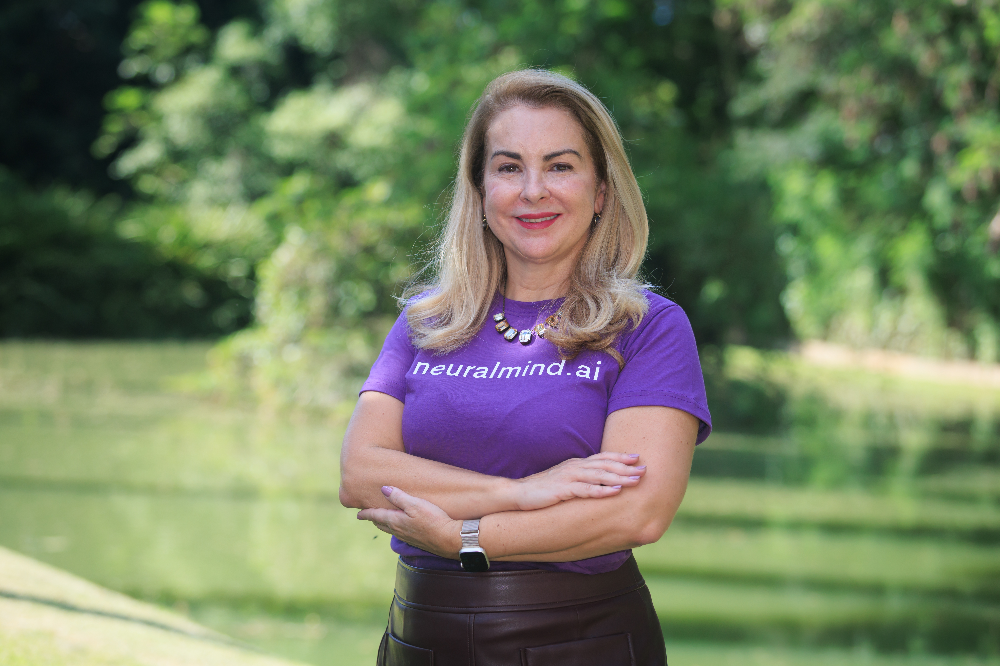
Palestra
Inteligência para decisão.
Palestra · CEO
Foto da liderança + tema + agenda · feed 1:1 · ideal para divulgar talks, painéis e keynotes.
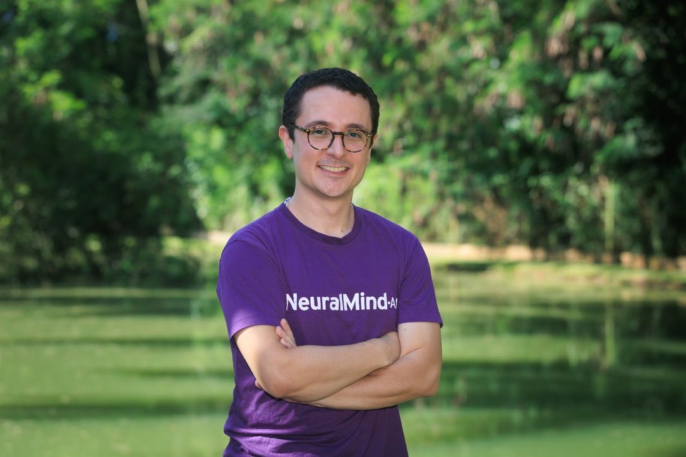
Participação confirmada
Tema da participação no evento.
Vicente dos Santos Head de Inovação, Produtos e Desenvolvimento de Negócios
Nome do evento · Local
Evento · Kleber Vicente
Card 4:5 para feed · foto, tema, agenda e local editáveis · sem logo ou monograma.
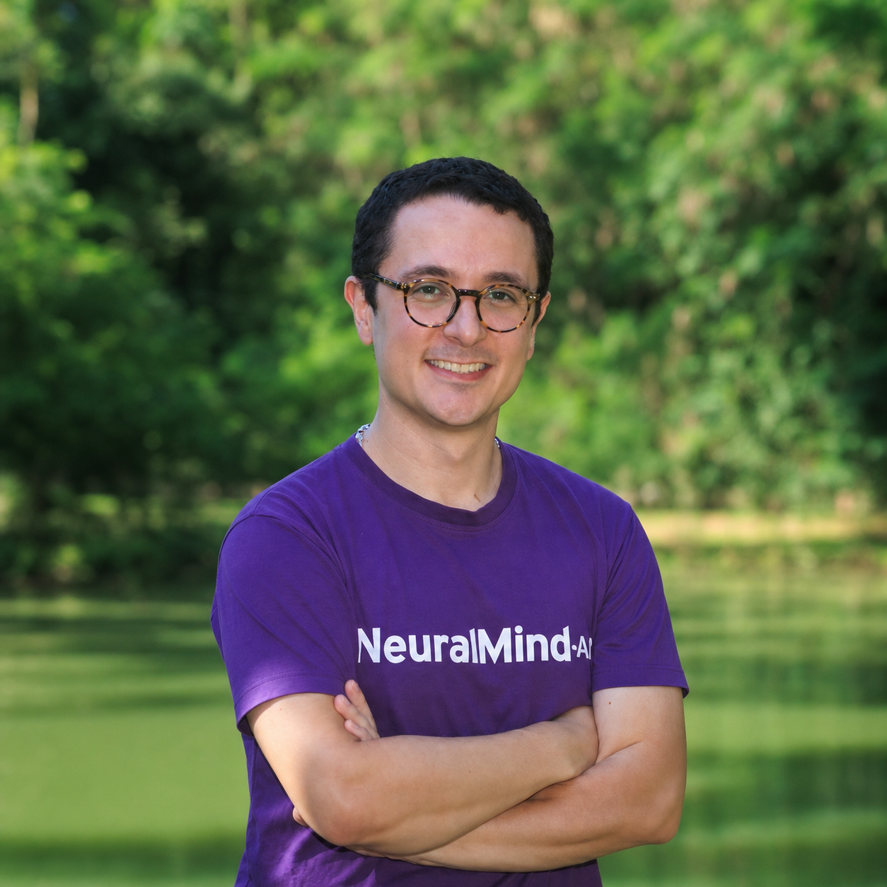
WhatsApp · Foto de Perfil
Retrato quadrado com enquadramento seguro para o recorte circular do aplicativo · sem elementos gráficos adicionados.
Evento
Encontre a NeuralMind.ai no estande B12.
Vamos conversar sobre Decision Intelligence e como apoiar decisões críticas com contexto, evidências e rastreabilidade.
Evento · Visite o Estande
Chamada presencial + localização do estande · feed 1:1 · para feiras, congressos e ativações comerciais.